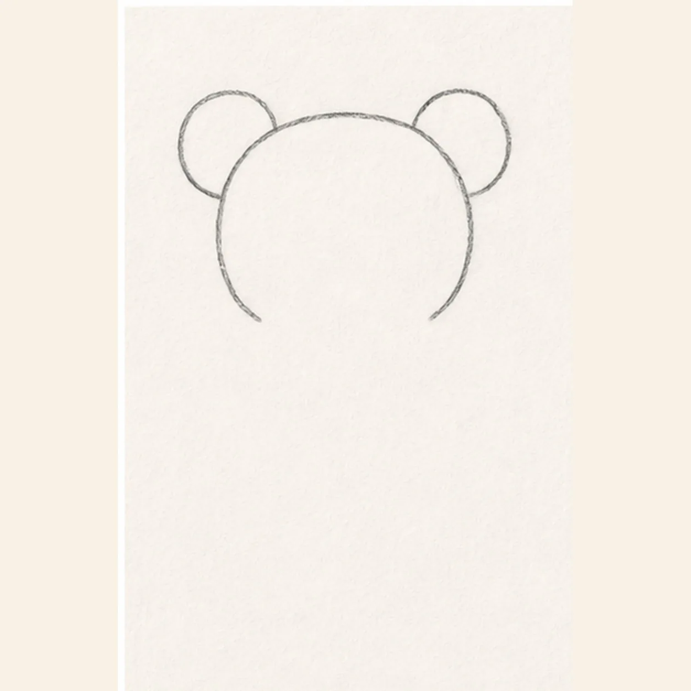
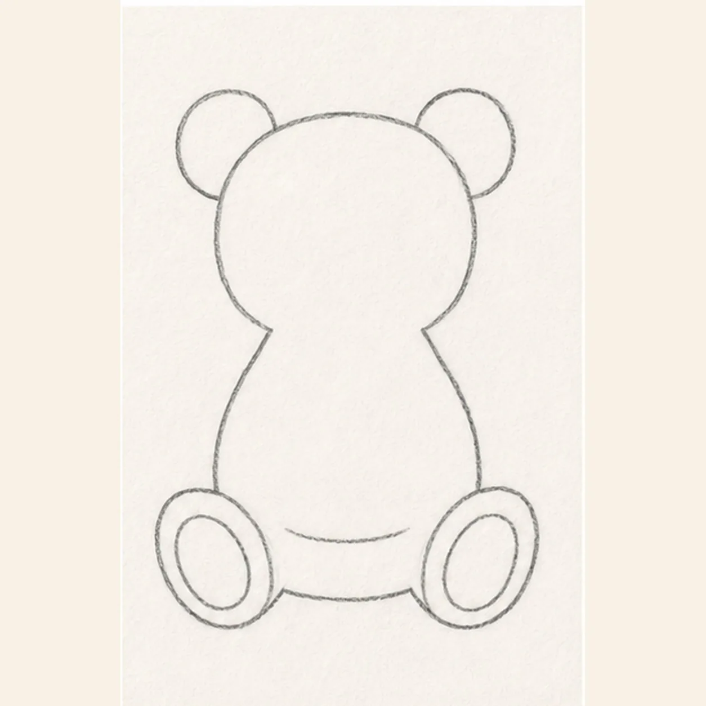
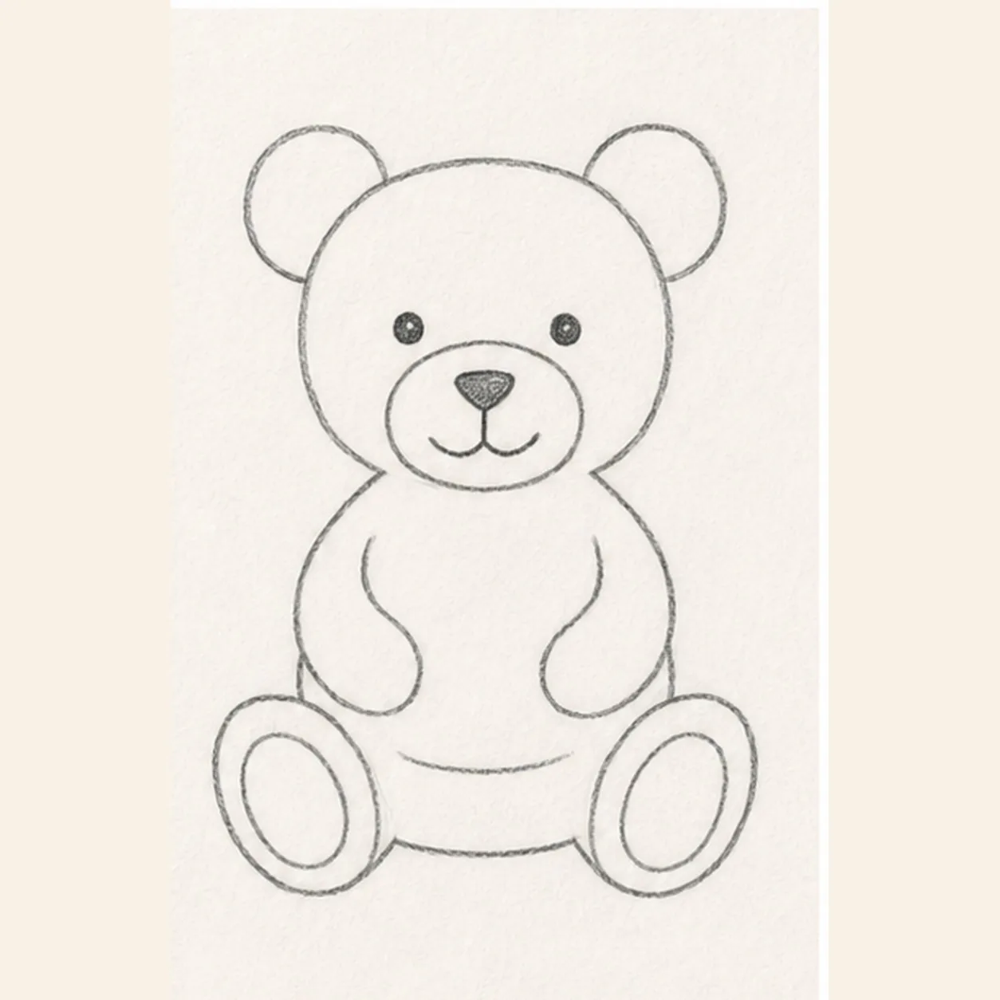
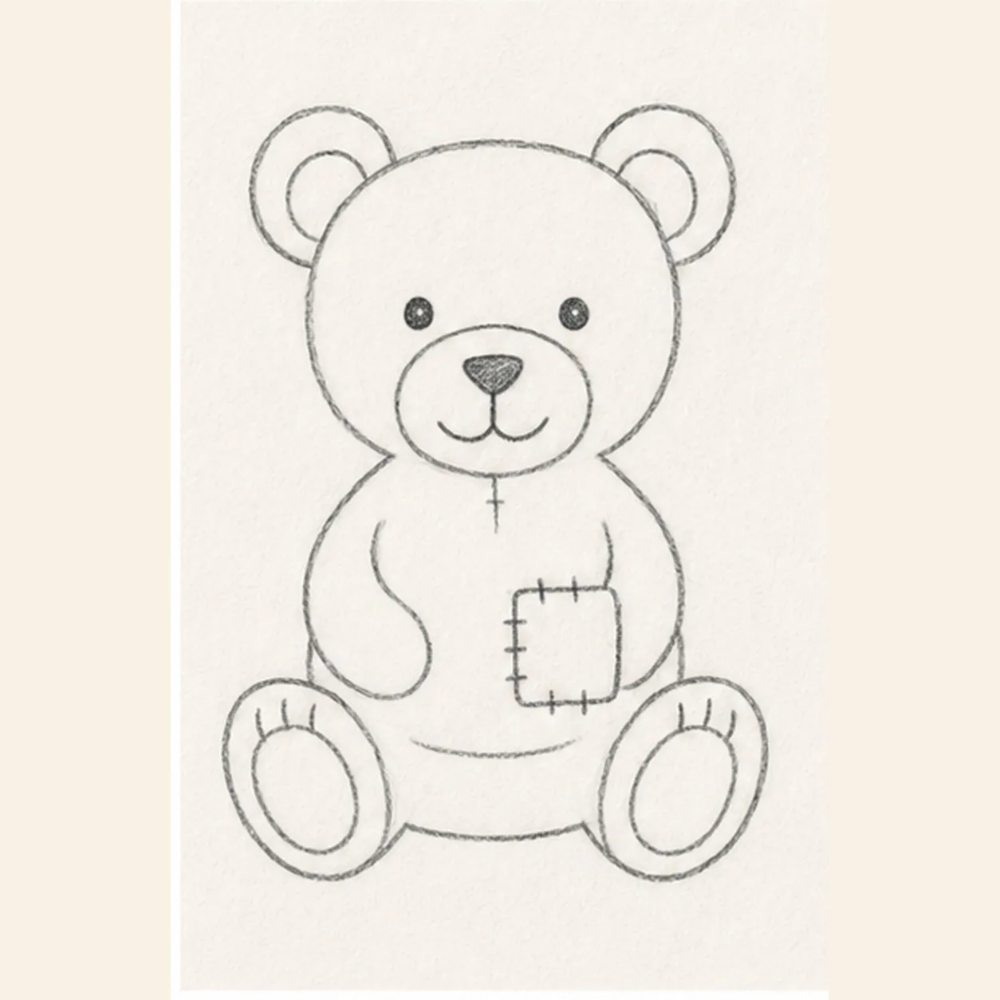
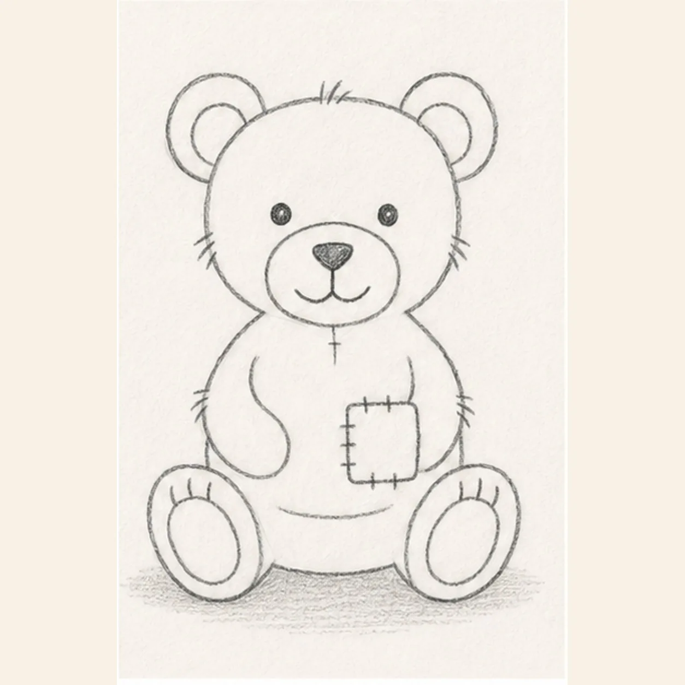

From the archive
Let's draw a teddy bear
Treat this as one small practice round: build the subject lightly, notice the shapes, then darken only the lines that help the finished sketch.
-
01

Draw the head and ears
Near the upper half of the page, draw one broad rounded head. Attach one round ear to each upper corner, keeping the two ear circles similar in size and leaving open paper below for the body.
Sketch tip: Ghost the wide head arc before touching down, then compare the two open spaces beneath the ears instead of chasing perfect symmetry.
-
02

Add the seated body and paws
From beneath the head, sweep two curves outward into a pear-shaped seated body. At the bottom, add one bent leg and oval paw on each side, draw one large inner pad oval inside each paw, then join the paws with a short belly curve.
Sketch tip: Place both paws on the same baseline. Squint at the empty space between them before you commit to the belly curve.
-
03

Place the arms and face
Curve one arm from each shoulder toward the belly. Center a low oval muzzle between two small eyes, then add a triangular nose, one short center line, and two shallow mouth curves.
Sketch tip: Use the muzzle as the face anchor: the eyes sit just above its widest point, and both arms end at roughly the same belly height.
-
04

Sew on the patch and seams
Add a small crescent inside each ear. Draw a rounded rectangular patch on the lower-right belly, then cross its edge with exactly seven short stitches: two at the top, three at the left, and two at the bottom. Place one short center seam below the muzzle, then add exactly three short toe marks above each established paw-pad oval.
Sketch tip: Count the seven patch stitches by edge before moving on. Short uneven marks look more like hand sewing than perfectly spaced dashes.
-
05

Add fur and the shadow
Break the silhouette with exactly five small fur-tick groups: one on top of the head, one at each cheek, and one at each outer body side. Then draw one broken oval shadow beneath the bear.
Sketch tip: Aim each fur group outward from the contour. Keep the shadow light and broken so it grounds the toy without becoming a dark platform.
-
06

Shade your teddy bear
Layer warm brown colored pencil over the established bear, dusty rose inside the ears and paw pads, muted teal on the patch, and cool gray in the shadow. Deepen the graphite around the muzzle, seams, stitches, and fur ticks while leaving small paper highlights.
Sketch tip: Pull short colored-pencil strokes with the round forms. Count two ears, two arms, two feet, seven stitches, and five fur groups, then stop while the sketch still feels soft and handmade.

![Handmade graphite and restrained colored-pencil sketch of one left-facing muted-ochre seahorse with one horse-like head and long snout, one three-point crown ridge, one visible eye, one arched neck and rounded belly, one tapering clockwise-curled tail wrapped exactly once around one teal-green eelgrass stem, one ribbed dorsal fin, exactly two small side fins, exactly seven curved torso plates, exactly five narrow eelgrass leaves, exactly two pale-blue bubbles, exactly two open-paper highlights, visible paper tooth, and one broken cool-gray ground shadow](../assets/seahorse-curled-around-eelgrass-finished-v1.webp)